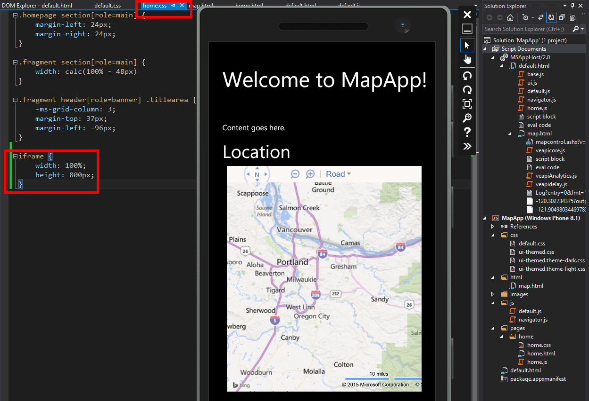
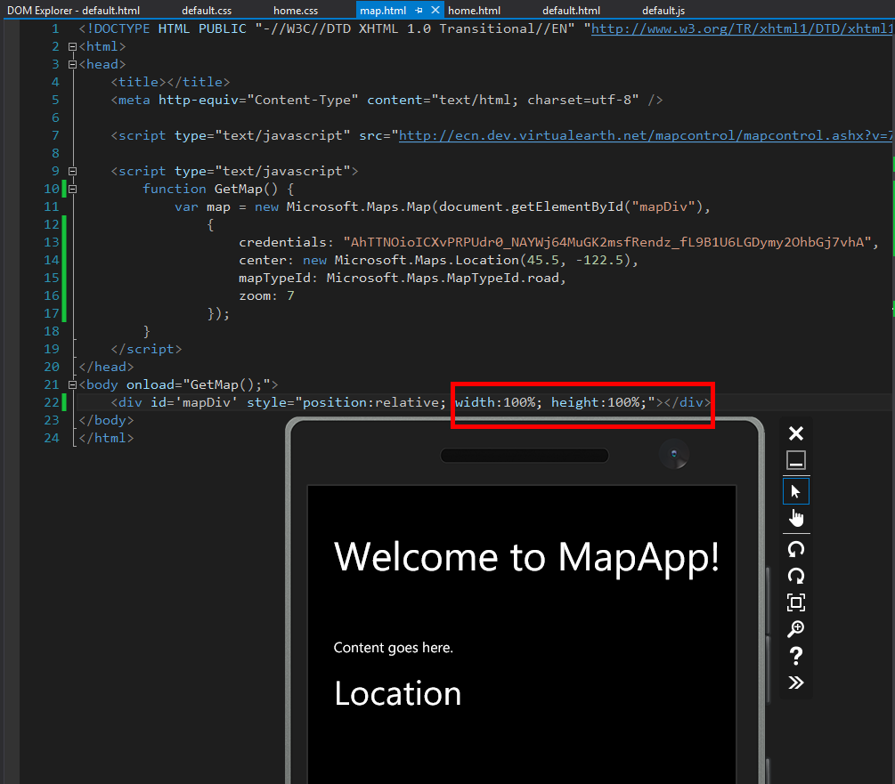
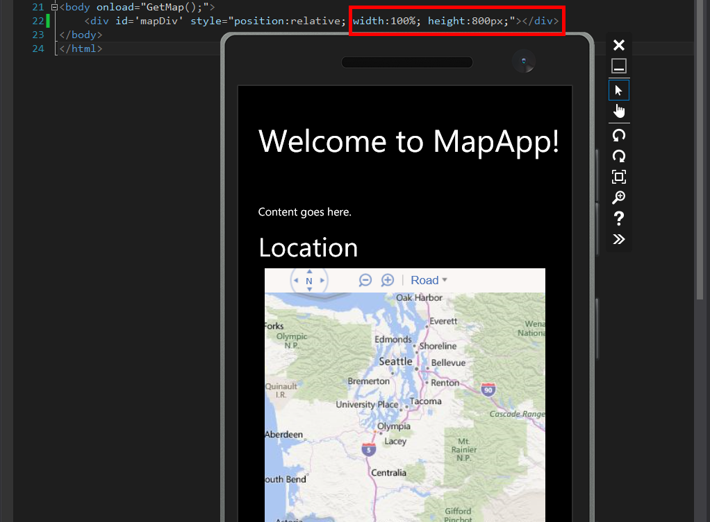
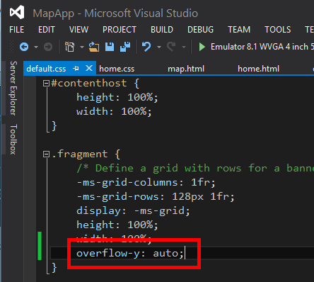

The first step is to change what is shown below. We want to insert the iframe into the home.css control. The way Microsoft has the template structured allows for a very nice granular control of each pages styling.
In the screenshot below I have left the map.html's styling elements unchanged. Adding this iframe control shows how it affects the div the actual map is in, in the referenced file. This relationship always seems to throw me for a loop which is why I wanted to cover it in detail because Microsoft has another layer or two in the CSS which is the default.css file which has parameters such as the -ms-grid and the overflow-y parameter which is going to allow the pages of the app to be scrolled down with a touch input.
First we need to fix our sizing so the map is the size we ultimately want it to be and it does not have a double pan happening inside of the iframe.
In the screenshot shows the emulator with an empty page and no map. I have changed the two values in the red rectangle. With the iframe height and the mapDiv to both be based on a percetange of their host's height and width and the result is there is no map. The reason is the height is essentially undefined due to the Microsoft grids which are used to define the laoyout of the pages. If only the width was a percentage and the height is a fixed pixel amount the map would show up.
I chose to change the height of the map in the map dive to an arbitrary value of 800px to show how at this point we have a map of a size large enough to fill the screen but it does not pan up or down at this point.
Open up the default.css file and add the code shown in the image below.
As I stated earlier modifying the default.css file changes the attributes for all of the pages in our app. I prefer to do it this was as this is a fairly innocuous change. Said another way, I have found it to only help as it allows the users to scroll automatically when the page becomes too tall to fit on the screen. Also since a user can change the size of the text so often it allows us to not have to worry about how the page is going to fit after the user has modified the font size.
